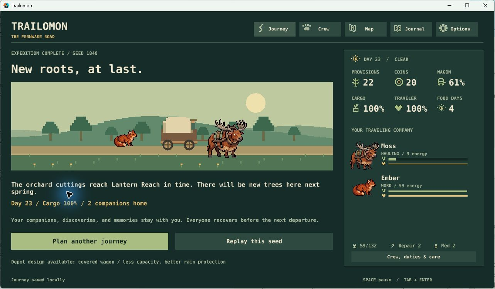
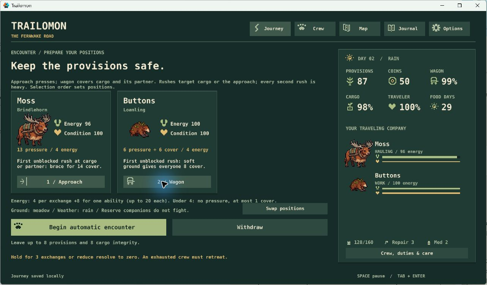
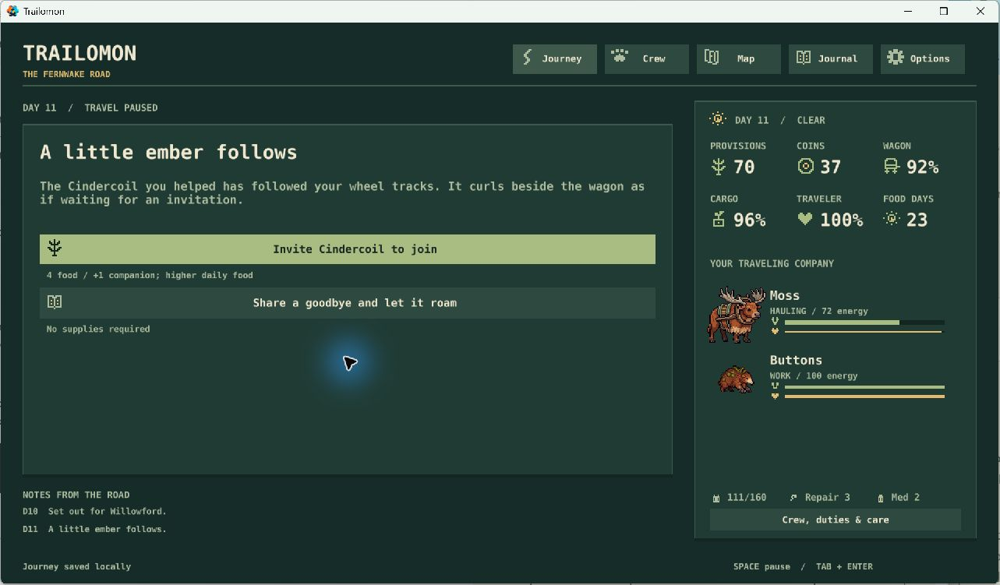
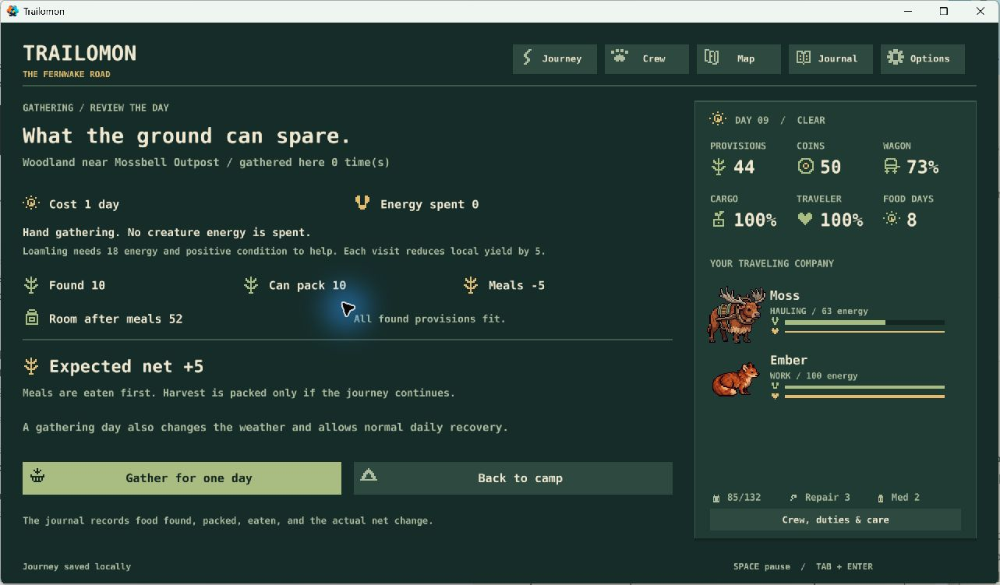
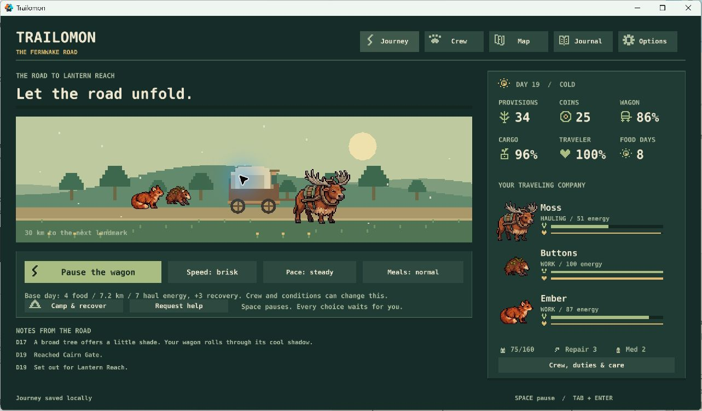
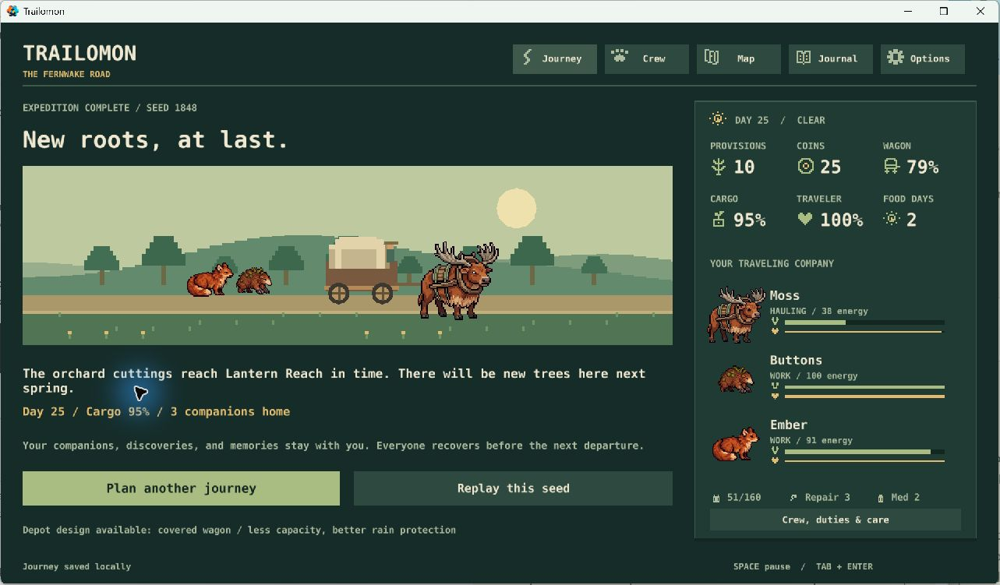
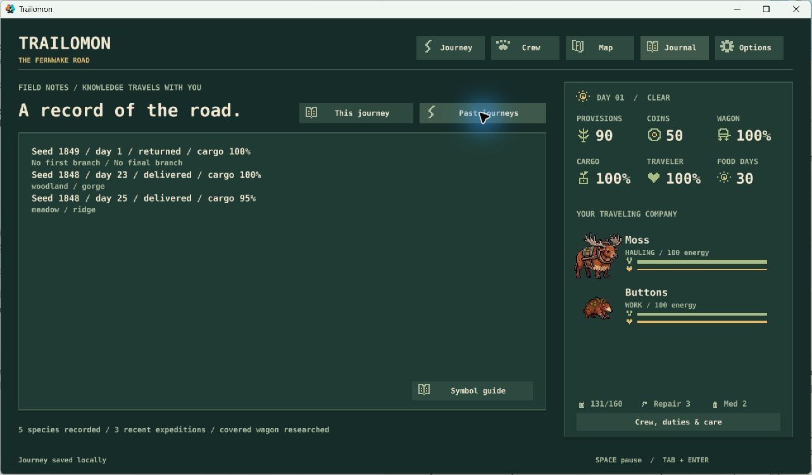

Trailomon · journey review · October 30, 2026
The trip works. Make the choices easier to read.
A fresh YES/NO page from the full-expedition playtest. These four choices are new; your earlier approvals still stand. My top picks are J1–J3.
Verdict: still building core systems. The journey supports planning, recovery, branching routes and another departure. The remaining work is combat tuning and a stronger sense of wilderness, with several small clarity improvements below. A native crash remains unresolved; this is not a release-ready verdict.
J1Inspect the crew before committing to a fight
Add “Back to the encounter” during initial combat setup. Let the player inspect positions, abilities and costs, then return to the original peaceful choices without paying a withdrawal penalty. Once the first exchange begins, normal withdrawal costs apply. Preserve the encounter and its random state so this cannot reroll an outcome.
Evidence: At the first scavenger encounter, leaving six provisions was available. Entering setup removed that choice; the only exit cost eight provisions and eight cargo, even before the first exchange.
Cost: one small state/UI/save-check PR. Recommend YES: preparation should support an informed commitment.
J2Show the full food cost of a new companion
Before inviting a creature, show provisions after the invitation, daily meals before → after, and food days before → after. Use the existing food and crew symbols with short labels, calculated from the real party and ration settings.
Evidence: On day 11, inviting a Cindercoil changed 70 provisions to 66, daily meals from three to four, and the food outlook from 23 days to 16. The preview said “higher daily food” without those numbers.
Cost: one focused preview PR with accounting checks. Recommend YES: this makes the expedition tradeoff clear before a welcome decision.
J3Give road choices a short, concrete outcome
Record a brief authored response and the actual resource changes in the existing road notes and journal. Start with sheltering a creature, paying scavengers and fitting a spare brace. No new popup, extra click, or spoilers for later follow-up events.
Evidence: Several choices only repeated the button label afterward. Gathering and combat already provide useful receipts; a failed shortcut clearly explained its wagon damage.
Cost: one or two small writing/receipt PRs. Recommend YES: make the world acknowledge the choice while keeping the quiet rhythm.
J4Remember the preferred viewing speed
Restore calm or brisk viewing speed when reopening the game. Keep the journey paused on load, and keep viewing speed separate from travel pace and daily costs.
Evidence: A normal close/reopen restored crew, wagon, hurried pace, generous meals, sound off and reduced motion. Brisk viewing speed reset to calm.
Cost: a small settings/save compatibility PR. Recommend YES, lower priority: useful convenience after the decision previews.
Already approved: N3’s guardian pattern, S5 combat tuning, N5’s increasing wilderness, N6’s creature refinement, and N7’s later equipment experiment. You do not need to approve them again. This page does not expand the route or roster.
Read the playtest report and screenshots
What worked
The last-shop warning made resupply matter. River preparation traded coins against companion effort. Crew fatigue, daily meals and the covered wagon’s smaller capacity created linked decisions. The map kept the six-stop destination and closing date clear. Gathering matched its preview and visibly depleted. Finishing unlocked a wagon and retained a befriended creature for the next departure.
Actual Windows playtest
Two roles were played through the normal interface at 1280 × 720, using seed 1848 in an isolated profile. “New player” means a developer following the visible instructions, not an independent blind participant. “Expert” means deliberate tradeoff and exploit probes, not optimal play or a controlled comparison between crews.
| Role | Approach | Outcome |
|---|---|---|
| New player | Open wagon; Moss + Buttons; steady/normal. Fight scavengers, recruit Cindercoil, ferry, ridge, wait for guardian. | Day 25 delivery; 95% cargo; three companions; ten provisions. |
| Expert | Covered wagon; Moss + Ember; hurried/generous. Peaceful scavengers, woodland gathering, companion river line, sheltered gorge. | Day 23 delivery; 100% cargo; two companions; 22 provisions. Moss finished with nine energy. |

Source: release build ad3941e63ae2bc6b38adaa296b2c0ef8aefc8385, whose gameplay files match main 59f4ecf7dda39dd406aeeda0b4512b46400809fa. Only the copied test bundle’s save namespace changed. The existing player profile and shareable archive were preserved.





A third departure on seed 1849 verified voluntary return: the confirmation explained that delivery would end while companions and discoveries remained. Returning produced a valid ending, and the journal retained both deliveries and the return. The retained Cindercoil and covered-wagon option were available for another departure.

Already fixed in this batch
The expedition reporter’s “Reproduce” section incorrectly printed the default seed range when the report used custom seeds, strategies or safeguards. It now prints the actual options, or the actual replay path. A regression checks seed 1848, custom limits, a matched replay and PowerShell quoting. No balance rules changed.
Reliability and limits
Open native crash: after the test runner’s Windows firewall interruption, the visible game crashed during reactivation. Windows recorded exception 0xc0000005 at offset 0x5dc031, matching the earlier activation fault. The cause is unproven. Relaunch restored the exact day-six journey; a subsequent normal close/reopen also succeeded. Save recovery worked, but that does not resolve the crash. Keep this in S10 before a release candidate.
Sound and reduced-motion preferences survived restart. A listening review and full physical-keyboard pass remain open: injected Tab did not move focus, consistent with the earlier tool limitation. Tool delays, captures, the interruption and mixed viewing speeds make elapsed session time unsuitable as human playtime. The intended 20–35 minute pacing still needs a human timing pass.
Verification: 40 Lua checks and 18 Python checks pass after the report fix. Native save/backup/recovery and 34 GUI states passed earlier in this batch. These checks cover logic and construction; the screenshots and journeys above separately cover visible play. No automated test is currently failing.
The earlier N1 baseline remains useful: 120 full journeys and 339 matched continuations repeated exactly. Its reference scavenger fights often added a recovery day. These two UI journeys add usability evidence, not a new balance conclusion. Next approved work: the guardian experiment and measured S5 tuning, while S10 tracks reliability and the remaining physical checks.